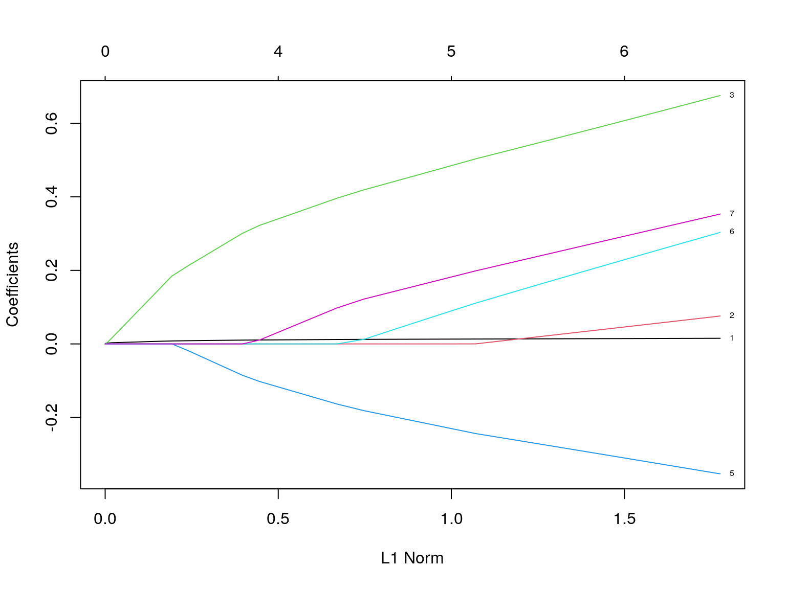
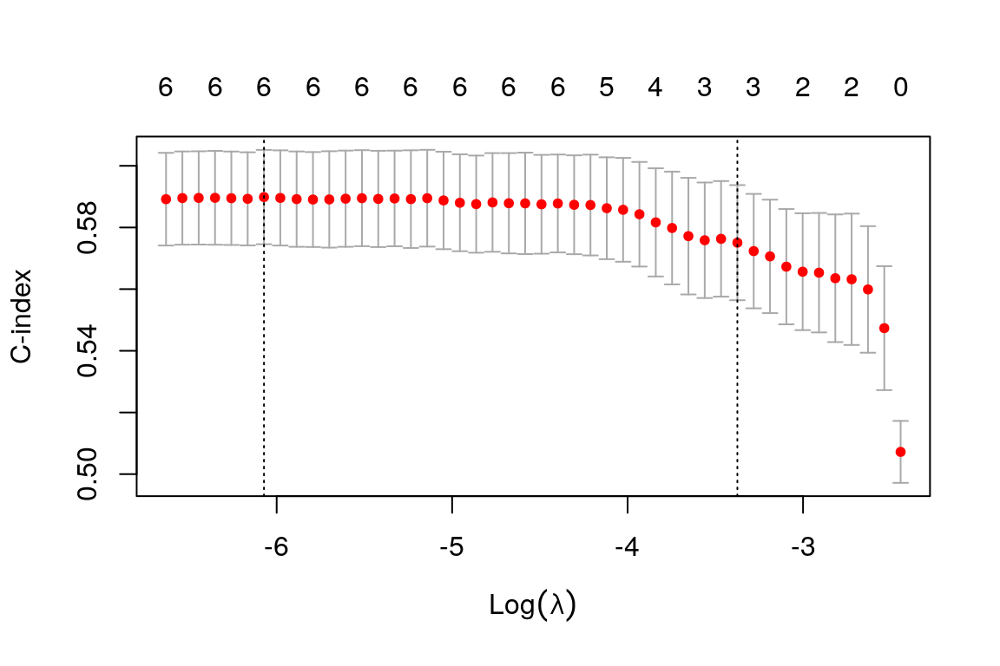
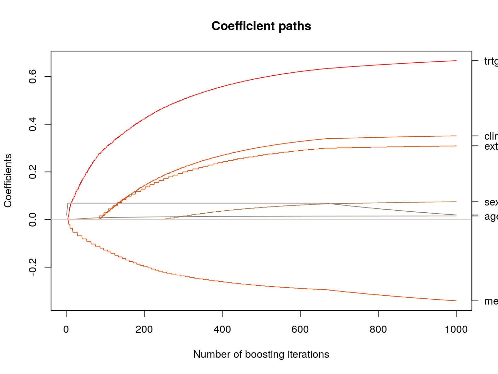
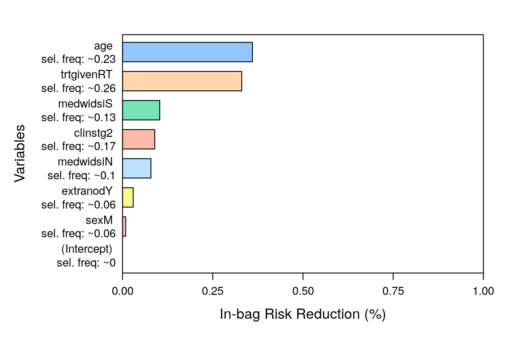
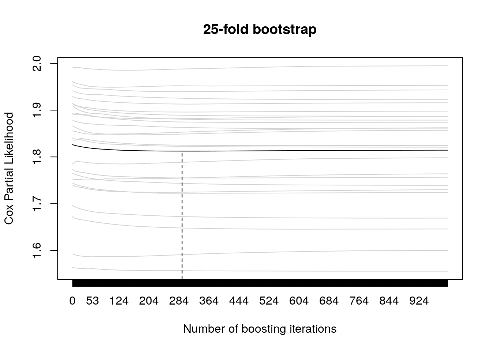
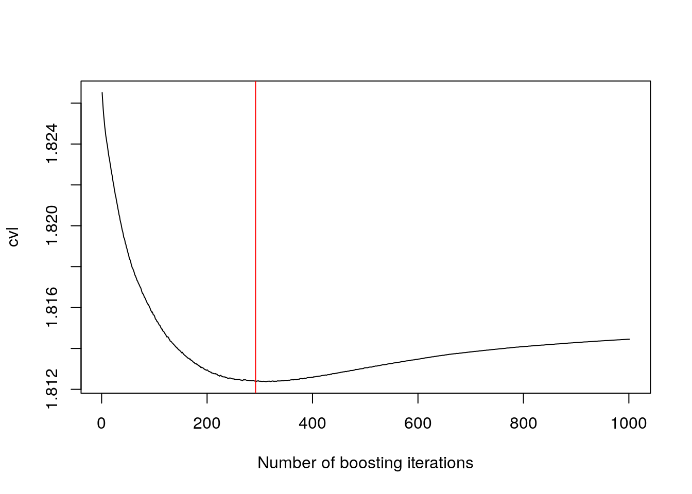
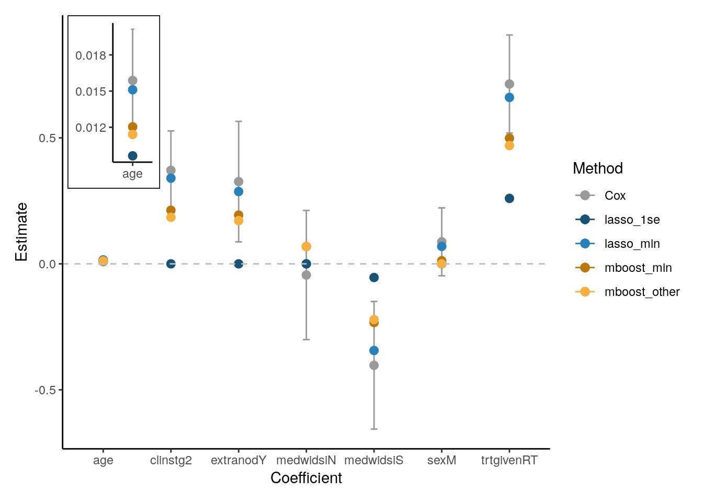
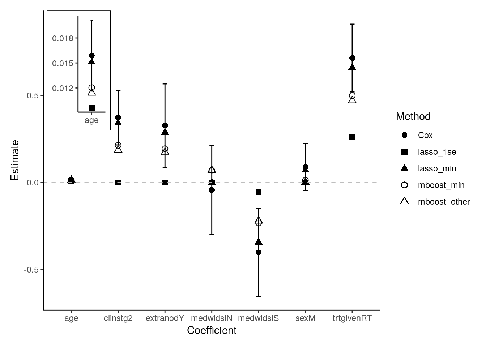

The dataset used here corresponds to the Hodgkin’s disease (HD) study described in Pintilie, 2006. The data was loaded and pre-processed using the script that is sourced below. The latter creates three data objects:
hd: all the samples in the original datahd_train: a random sample of the data to be used as a
training sethd_test: a random sample of the data to be used as a
testing setDetails about data pre-processing steps can be found here
source("../Aux/data_prep.R")
#> Loading required package: readr
#> Loading required package: splitstackshape
#> The sourced script has been used to load and pre-process the data.
#> The latter converts appropriate variables into factors.
#> Additionally, we randomly split the data into training and testing sets,
#> enabling us to evaluate out-of-sample predictive performance when comparing different approaches.The following sections illustrate the usage of different methods defined using a cause-specific hazards formulation.
There are several R packages that one can employ to fit a cause-specific hazard regression model. For this purpose, separate Cox proportional hazards models are fitted for each event type, treating other events as censored observations. In this section, we explore how we can perform this task with different R packages. We discuss its similarities and differences: highlighting important aspects to consider in each case.
survival packageThe model can be fit with the coxph() function in the
survival package. In order to do so, one should first
create a survival time object with the Surv() function.
This object will be the response variable in our regression model. For
illustration purposes, we only fit the cause-specific model associated
to events of type 1. To do this, in the code below, we have set
status==1 in the second argument of Surv() to
indicate that we are interested in event type 1. This setting will treat
the other status values as censored observations. The cause-specific
model for the second event type can be fitted using
status==2.
require(survival)
csh_survival <- coxph(Surv(time, status == 1) ~ age +
sex +
trtgiven +
medwidsi +
extranod +
clinstg,
data = hd_train,
x = TRUE, # needed for predictions
# this is the default, one can also use Breslow
ties = "efron")
summary(csh_survival)
#> Call:
#> coxph(formula = Surv(time, status == 1) ~ age + sex + trtgiven +
#> medwidsi + extranod + clinstg, data = hd_train, ties = "efron",
#> x = TRUE)
#>
#> n= 692, number of events= 233
#>
#> coef exp(coef) se(coef) z Pr(>|z|)
#> age 0.015879 1.016006 0.004249 3.738 0.000186 ***
#> sexM 0.087491 1.091432 0.134759 0.649 0.516182
#> trtgivenRT 0.713903 2.041946 0.194581 3.669 0.000244 ***
#> medwidsiN -0.044301 0.956666 0.256368 -0.173 0.862807
#> medwidsiS -0.402680 0.668526 0.253404 -1.589 0.112041
#> extranodY 0.326442 1.386027 0.239225 1.365 0.172384
#> clinstg2 0.371257 1.449556 0.156389 2.374 0.017600 *
#> ---
#> Signif. codes: 0 '***' 0.001 '**' 0.01 '*' 0.05 '.' 0.1 ' ' 1
#>
#> exp(coef) exp(-coef) lower .95 upper .95
#> age 1.0160 0.9842 1.0076 1.025
#> sexM 1.0914 0.9162 0.8381 1.421
#> trtgivenRT 2.0419 0.4897 1.3945 2.990
#> medwidsiN 0.9567 1.0453 0.5788 1.581
#> medwidsiS 0.6685 1.4958 0.4068 1.099
#> extranodY 1.3860 0.7215 0.8672 2.215
#> clinstg2 1.4496 0.6899 1.0669 1.969
#>
#> Concordance= 0.61 (se = 0.02 )
#> Likelihood ratio test= 37.91 on 7 df, p=3e-06
#> Wald test = 38.21 on 7 df, p=3e-06
#> Score (logrank) test = 38.95 on 7 df, p=2e-06The above output summarises the fitted model. First, it shows that
out of the 692 patients, 233 experienced the event of interest
(relapse). Second, it shows the coefficients and hazard ratios
(exp(coef)) for each covariate, along with the results of a
marginal significance test. The results suggest that age, treatment, and
clinical stage are significantly associated with the hazard of relapse.
For instance, being in clinical stage 2 increases the cause-specific
hazard (rate) of relapse by 44.96% when compared to a patient in stage
1. It is important to emphasise that one should be cautious when
interpreting these covariate effects as this modelling strategy only
permits to do inference of the effects on the hazard but not on the
prognosis or survival (see more details in Austin, Lee, and Fine (2016)). Naively estimating survival/risk
probabilities from this model, will result in overestimation of the
survival function, as competing risks are not taken into account. See
the riskRegression section for
a valid approach. Finally, the output also reports model fitness
statistics, including the concordance index, which summaries the
in-sample discriminative ability of the model (a value close to 1 is
preferred).b Note, however, that none of these metrics account for
competing events.
rms packageAnother package that permits to fit the model is rms.
This package provides useful functions for model validation, and
plotting which are well documented in Harrell (2017).
Before fitting the model, it is important to compute summary
statistics of the covariates that will be employed. Such statistics will
be used when plotting or doing predictions. These summary statistics are
computed using datadist() function.
As in the previous section, we only fit the cause specific model for
the first event type. The code for the model associated to the second
event type is analogous, using status == 2 in the
Surv() call.
require(rms)
units(hd$time) <- "years"
dd <- datadist(hd)
options(datadistc = "dd")
csh_rms <- cph(Surv(time, status == 1) ~ age +
sex +
trtgiven +
medwidsi +
extranod +
clinstg,
data = hd_train,
x = TRUE,
y = TRUE,
surv = TRUE,
method = "efron") # default is efron, one can also use breslow
print(csh_rms)
#> Cox Proportional Hazards Model
#>
#> cph(formula = Surv(time, status == 1) ~ age + sex + trtgiven +
#> medwidsi + extranod + clinstg, data = hd_train, method = "efron",
#> x = TRUE, y = TRUE, surv = TRUE)
#>
#> Model Tests Discrimination
#> Indexes
#> Obs 692 LR chi2 37.91 R2 0.054
#> Events 233 d.f. 7 R2(7,692)0.044
#> Center 1.2434 Pr(> chi2) 0.0000 R2(7,233)0.124
#> Score chi2 38.95 Dxy 0.219
#> Pr(> chi2) 0.0000
#>
#> Coef S.E. Wald Z Pr(>|Z|)
#> age 0.0159 0.0042 3.74 0.0002
#> sex=M 0.0875 0.1348 0.65 0.5162
#> trtgiven=RT 0.7139 0.1946 3.67 0.0002
#> medwidsi=N -0.0443 0.2564 -0.17 0.8628
#> medwidsi=S -0.4027 0.2534 -1.59 0.1120
#> extranod=Y 0.3264 0.2392 1.36 0.1724
#> clinstg=2 0.3713 0.1564 2.37 0.0176In this case, printing the fitted model, gives a slightly different
output. First, the output includes several discrimination indices. Note
that, the concordance index can be recovered using the Dxy
index. Moreover, note that these metrics ignore the presence of
competing event types.
summary.rms() is of more utility to compute hazard
ratios. For continuous covariates, the HR are computed with respect to
the lower and upper quartiles. For instance, from the output below we
can infer that a 20-year increase in age (going from 23 to 43),
increases the cause-specific hazard of relapse by 37.38% . This is in
contrast to the coefficients obtained by print(), which in
this case corresponds to exp(coef)=1.02 and whose
interpretation refers to the effect on the hazard by 1-year
increase.
summary(csh_rms)
#> Effects Response : Surv(time, status == 1)
#>
#> Factor Low High Diff. Effect S.E. Lower 0.95 Upper 0.95
#> age 23 43 20 0.317580 0.084972 0.15104 0.484130
#> Hazard Ratio 23 43 20 1.373800 NA 1.16300 1.622800
#> sex - F:M 2 1 NA -0.087491 0.134760 -0.35161 0.176630
#> Hazard Ratio 2 1 NA 0.916230 NA 0.70355 1.193200
#> trtgiven - CMT:RT 2 1 NA -0.713900 0.194580 -1.09530 -0.332530
#> Hazard Ratio 2 1 NA 0.489730 NA 0.33445 0.717110
#> medwidsi - L:N 2 1 NA 0.044301 0.256370 -0.45817 0.546770
#> Hazard Ratio 2 1 NA 1.045300 NA 0.63244 1.727700
#> medwidsi - S:N 2 3 NA -0.358380 0.171210 -0.69395 -0.022805
#> Hazard Ratio 2 3 NA 0.698810 NA 0.49960 0.977450
#> extranod - Y:N 1 2 NA 0.326440 0.239220 -0.14243 0.795310
#> Hazard Ratio 1 2 NA 1.386000 NA 0.86725 2.215100
#> clinstg - 1:2 2 1 NA -0.371260 0.156390 -0.67777 -0.064740
#> Hazard Ratio 2 1 NA 0.689870 NA 0.50775 0.937310Furthermore, one can manually define ranges in which we want to compute HR; for instance going from 30-40 years, i.e. a 10-year increase will result in a increase in the cause-specific hazard of 17.21%, as shown below. Similarly, for discrete covariates, one can define the reference level with respect to which the HR are computed; for example, below we have changed the reference level for sex.
summary(csh_rms, age = c(30, 40), sex = "F")
#> Effects Response : Surv(time, status == 1)
#>
#> Factor Low High Diff. Effect S.E. Lower 0.95 Upper 0.95
#> age 30 40 10 0.158790 0.042486 0.075521 0.242060
#> Hazard Ratio 30 40 10 1.172100 NA 1.078400 1.273900
#> sex - M:F 1 2 NA 0.087491 0.134760 -0.176630 0.351610
#> Hazard Ratio 1 2 NA 1.091400 NA 0.838090 1.421400
#> trtgiven - CMT:RT 2 1 NA -0.713900 0.194580 -1.095300 -0.332530
#> Hazard Ratio 2 1 NA 0.489730 NA 0.334450 0.717110
#> medwidsi - L:N 2 1 NA 0.044301 0.256370 -0.458170 0.546770
#> Hazard Ratio 2 1 NA 1.045300 NA 0.632440 1.727700
#> medwidsi - S:N 2 3 NA -0.358380 0.171210 -0.693950 -0.022805
#> Hazard Ratio 2 3 NA 0.698810 NA 0.499600 0.977450
#> extranod - Y:N 1 2 NA 0.326440 0.239220 -0.142430 0.795310
#> Hazard Ratio 1 2 NA 1.386000 NA 0.867250 2.215100
#> clinstg - 1:2 2 1 NA -0.371260 0.156390 -0.677770 -0.064740
#> Hazard Ratio 2 1 NA 0.689870 NA 0.507750 0.937310Note that naively estimating survival probabilities from this model, will result in overestimation of the survival function, as competing risks are not taken into account. See the next section for a valid approach.
riskRegression packageOne can also use the CSC() function from
riskRegression to fit cause-specific hazard regression
models. This package acts as an interface to obtain either a
coxph or a cph object through the
fitter argument. In addition, this function simultaneously
fits models for both competing events when
surv.type = "hazard". Below, we employ the same covariates
for both event types, but it is possible to fit different regression
models for each cause (see example below). Note that in this case, the
response variable in the regression model is obtained with the
Hist() function available in the prodlim R
package.
require(riskRegression)
require(prodlim) # for Hist()
csh_riskRegression <- CSC(Hist(time, status) ~ age +
sex +
trtgiven +
medwidsi +
extranod +
clinstg,
data = hd_train,
surv.type = "hazard",
cause = 1)
print(csh_riskRegression)
#> CSC(formula = Hist(time, status) ~ age + sex + trtgiven + medwidsi +
#> extranod + clinstg, data = hd_train, cause = 1, surv.type = "hazard")
#>
#> Right-censored response of a competing.risks model
#>
#> No.Observations: 692
#>
#> Pattern:
#>
#> Cause event right.censored
#> 1 233 0
#> 2 108 0
#> unknown 0 351
#>
#>
#> ----------> Cause: 1
#>
#> Call:
#> coxph(formula = survival::Surv(time, status) ~ age + sex + trtgiven +
#> medwidsi + extranod + clinstg, x = TRUE, y = TRUE)
#>
#> n= 692, number of events= 233
#>
#> coef exp(coef) se(coef) z Pr(>|z|)
#> age 0.015879 1.016006 0.004249 3.738 0.000186 ***
#> sexM 0.087491 1.091432 0.134759 0.649 0.516182
#> trtgivenRT 0.713903 2.041946 0.194581 3.669 0.000244 ***
#> medwidsiN -0.044301 0.956666 0.256368 -0.173 0.862807
#> medwidsiS -0.402680 0.668526 0.253404 -1.589 0.112041
#> extranodY 0.326442 1.386027 0.239225 1.365 0.172384
#> clinstg2 0.371257 1.449556 0.156389 2.374 0.017600 *
#> ---
#> Signif. codes: 0 '***' 0.001 '**' 0.01 '*' 0.05 '.' 0.1 ' ' 1
#>
#> exp(coef) exp(-coef) lower .95 upper .95
#> age 1.0160 0.9842 1.0076 1.025
#> sexM 1.0914 0.9162 0.8381 1.421
#> trtgivenRT 2.0419 0.4897 1.3945 2.990
#> medwidsiN 0.9567 1.0453 0.5788 1.581
#> medwidsiS 0.6685 1.4958 0.4068 1.099
#> extranodY 1.3860 0.7215 0.8672 2.215
#> clinstg2 1.4496 0.6899 1.0669 1.969
#>
#> Concordance= 0.61 (se = 0.02 )
#> Likelihood ratio test= 37.91 on 7 df, p=3e-06
#> Wald test = 38.21 on 7 df, p=3e-06
#> Score (logrank) test = 38.95 on 7 df, p=2e-06
#>
#>
#>
#> ----------> Cause: 2
#>
#> Call:
#> coxph(formula = survival::Surv(time, status) ~ age + sex + trtgiven +
#> medwidsi + extranod + clinstg, x = TRUE, y = TRUE)
#>
#> n= 692, number of events= 108
#>
#> coef exp(coef) se(coef) z Pr(>|z|)
#> age 0.077784 1.080889 0.006867 11.327 < 2e-16 ***
#> sexM 0.644928 1.905850 0.209051 3.085 0.00204 **
#> trtgivenRT -0.062907 0.939031 0.241929 -0.260 0.79485
#> medwidsiN 0.264183 1.302367 0.408144 0.647 0.51745
#> medwidsiS 0.188405 1.207322 0.404631 0.466 0.64149
#> extranodY -0.140512 0.868913 0.383517 -0.366 0.71408
#> clinstg2 0.451261 1.570291 0.228931 1.971 0.04871 *
#> ---
#> Signif. codes: 0 '***' 0.001 '**' 0.01 '*' 0.05 '.' 0.1 ' ' 1
#>
#> exp(coef) exp(-coef) lower .95 upper .95
#> age 1.0809 0.9252 1.0664 1.096
#> sexM 1.9059 0.5247 1.2652 2.871
#> trtgivenRT 0.9390 1.0649 0.5845 1.509
#> medwidsiN 1.3024 0.7678 0.5852 2.898
#> medwidsiS 1.2073 0.8283 0.5463 2.668
#> extranodY 0.8689 1.1509 0.4098 1.843
#> clinstg2 1.5703 0.6368 1.0026 2.460
#>
#> Concordance= 0.816 (se = 0.022 )
#> Likelihood ratio test= 159.6 on 7 df, p=<2e-16
#> Wald test = 161.9 on 7 df, p=<2e-16
#> Score (logrank) test = 211.8 on 7 df, p=<2e-16Now the output shows model summaries for both causes. If we analyse
Cause: 1, the results should be identical to those obtained with
coxph() in the survival package, and are interpreted in the
same way.
Results obtained by using a cph fitter are the same as
above and are shown below:
csh_riskRegression.cph <- CSC(Hist(time, status) ~ age +
sex +
trtgiven +
medwidsi +
extranod +
clinstg,
data = hd_train,
surv.type = "hazard",
fitter = "cph")
print(csh_riskRegression.cph)
#> CSC(formula = Hist(time, status) ~ age + sex + trtgiven + medwidsi +
#> extranod + clinstg, data = hd_train, surv.type = "hazard",
#> fitter = "cph")
#>
#> Right-censored response of a competing.risks model
#>
#> No.Observations: 692
#>
#> Pattern:
#>
#> Cause event right.censored
#> 1 233 0
#> 2 108 0
#> unknown 0 351
#>
#>
#> ----------> Cause: 1
#>
#> Cox Proportional Hazards Model
#>
#> cph(formula = survival::Surv(time, status) ~ age + sex + trtgiven +
#> medwidsi + extranod + clinstg, x = TRUE, y = TRUE, surv = TRUE)
#>
#> Model Tests Discrimination
#> Indexes
#> Obs 692 LR chi2 37.91 R2 0.054
#> Events 233 d.f. 7 R2(7,692)0.044
#> Center 1.2434 Pr(> chi2) 0.0000 R2(7,233)0.124
#> Score chi2 38.95 Dxy 0.219
#> Pr(> chi2) 0.0000
#>
#> Coef S.E. Wald Z Pr(>|Z|)
#> age 0.0159 0.0042 3.74 0.0002
#> sex=M 0.0875 0.1348 0.65 0.5162
#> trtgiven=RT 0.7139 0.1946 3.67 0.0002
#> medwidsi=N -0.0443 0.2564 -0.17 0.8628
#> medwidsi=S -0.4027 0.2534 -1.59 0.1120
#> extranod=Y 0.3264 0.2392 1.36 0.1724
#> clinstg=2 0.3713 0.1564 2.37 0.0176
#>
#>
#>
#> ----------> Cause: 2
#>
#> Cox Proportional Hazards Model
#>
#> cph(formula = survival::Surv(time, status) ~ age + sex + trtgiven +
#> medwidsi + extranod + clinstg, x = TRUE, y = TRUE, surv = TRUE)
#>
#> Model Tests Discrimination
#> Indexes
#> Obs 692 LR chi2 159.59 R2 0.247
#> Events 108 d.f. 7 R2(7,692)0.198
#> Center 3.5568 Pr(> chi2) 0.0000 R2(7,108)0.757
#> Score chi2 211.82 Dxy 0.631
#> Pr(> chi2) 0.0000
#>
#> Coef S.E. Wald Z Pr(>|Z|)
#> age 0.0778 0.0069 11.33 <0.0001
#> sex=M 0.6449 0.2091 3.09 0.0020
#> trtgiven=RT -0.0629 0.2419 -0.26 0.7948
#> medwidsi=N 0.2642 0.4081 0.65 0.5175
#> medwidsi=S 0.1884 0.4046 0.47 0.6415
#> extranod=Y -0.1405 0.3835 -0.37 0.7141
#> clinstg=2 0.4513 0.2289 1.97 0.0487Assume that we are interested in making risk predictions at time
\(t=5\) years for a new set of patients
(i.e. the test dataset hd_test). As an illustration, we
focus on predicting whether an event of type 1 will occur by that time
(to predict the occurrence of the second event type, use
cause = 2 in the code below). The
riskRegression package permits obtaining absolute risk
predictions at specific time points. For each patient in this new set,
this consists of calculating the probability of observing an event of
type 1 by 5 years. Here, we set product.limit = FALSE, to
use the exponential approximation \(S(t)=exp(-H(t)_1 - H(t)_2)\), where \(H(t)_j\) denotes the cumulative hazard for
cause \(j\) at time \(t\).
Below, we show the predicted risk for the first 5 patients in the
test dataset. We see how both fitters (coxph or
cph) give the same result:
risk.coxph <- predictRisk(csh_riskRegression,
times = 5,
newdata = hd_test, cause = 1,
product.limit = FALSE)
risk.coxph[1:5]
#> [1] 0.2990793 0.4231062 0.3337163 0.3216817 0.2279138
risk.cph <- predictRisk(csh_riskRegression.cph,
times = 5,
newdata = hd_test,
cause = 1,
product.limit = FALSE)
risk.cph[1:5]
#> [1] 0.2990793 0.4231062 0.3337162 0.3216816 0.2279138If instead we use the product limit estimator, we ensure \(\text{CIF}_1(t | X) + \text{CIF}_2(t|X) = 1\) and the output is slightly different:
risk.coxphPL <- predictRisk(csh_riskRegression,
times = 5,
newdata = hd_test,
cause = 1,
product.limit = TRUE)
risk.coxphPL[1:5]
#> [1] 0.2986879 0.4218109 0.3331601 0.3211892 0.2277556
risk.cphPL <- predictRisk(csh_riskRegression.cph,
times = 5,
newdata = hd_test,
cause = 1,
product.limit = TRUE)
risk.coxphPL[1:5]
#> [1] 0.2986879 0.4218109 0.3331601 0.3211892 0.2277556Note that the product limit estimator is also employed when using
predictEventProb() available in pec
package.
require(pec)
#> Loading required package: pec
#>
#> Attaching package: 'pec'
#> The following objects are masked from 'package:riskRegression':
#>
#> ipcw, selectCox
risk.pec <- predictEventProb(csh_riskRegression.cph,
newdata = hd_test,
cause = 1,
time = 5)
risk.pec[1:5]
#> [1] 0.2986878 0.4218109 0.3331600 0.3211891 0.2277556Finally, note also that riskRegression permits to fit
different regression models for each cause using Cox
proportional-hazards. In the example below, we use all covariates for
cause 1, and we employ only age, and sex for cause 2.
# Different regression models for each cause.
csh_riskRegression2 <- CSC(list(Hist(time, status) ~ age + sex + trtgiven +
medwidsi + extranod + clinstg,
Hist(time, status) ~ age + sex),
data = hd_train)
print(csh_riskRegression2)
#> CSC(formula = list(Hist(time, status) ~ age + sex + trtgiven +
#> medwidsi + extranod + clinstg, Hist(time, status) ~ age +
#> sex), data = hd_train)
#>
#> Right-censored response of a competing.risks model
#>
#> No.Observations: 692
#>
#> Pattern:
#>
#> Cause event right.censored
#> 1 233 0
#> 2 108 0
#> unknown 0 351
#>
#>
#> ----------> Cause: 1
#>
#> Call:
#> coxph(formula = survival::Surv(time, status) ~ age + sex + trtgiven +
#> medwidsi + extranod + clinstg, x = TRUE, y = TRUE)
#>
#> n= 692, number of events= 233
#>
#> coef exp(coef) se(coef) z Pr(>|z|)
#> age 0.015879 1.016006 0.004249 3.738 0.000186 ***
#> sexM 0.087491 1.091432 0.134759 0.649 0.516182
#> trtgivenRT 0.713903 2.041946 0.194581 3.669 0.000244 ***
#> medwidsiN -0.044301 0.956666 0.256368 -0.173 0.862807
#> medwidsiS -0.402680 0.668526 0.253404 -1.589 0.112041
#> extranodY 0.326442 1.386027 0.239225 1.365 0.172384
#> clinstg2 0.371257 1.449556 0.156389 2.374 0.017600 *
#> ---
#> Signif. codes: 0 '***' 0.001 '**' 0.01 '*' 0.05 '.' 0.1 ' ' 1
#>
#> exp(coef) exp(-coef) lower .95 upper .95
#> age 1.0160 0.9842 1.0076 1.025
#> sexM 1.0914 0.9162 0.8381 1.421
#> trtgivenRT 2.0419 0.4897 1.3945 2.990
#> medwidsiN 0.9567 1.0453 0.5788 1.581
#> medwidsiS 0.6685 1.4958 0.4068 1.099
#> extranodY 1.3860 0.7215 0.8672 2.215
#> clinstg2 1.4496 0.6899 1.0669 1.969
#>
#> Concordance= 0.61 (se = 0.02 )
#> Likelihood ratio test= 37.91 on 7 df, p=3e-06
#> Wald test = 38.21 on 7 df, p=3e-06
#> Score (logrank) test = 38.95 on 7 df, p=2e-06
#>
#>
#>
#> ----------> Cause: 2
#>
#> Call:
#> coxph(formula = survival::Surv(time, status) ~ age + sex, x = TRUE,
#> y = TRUE)
#>
#> n= 692, number of events= 108
#>
#> coef exp(coef) se(coef) z Pr(>|z|)
#> age 0.073799 1.076590 0.005933 12.439 < 2e-16 ***
#> sexM 0.644987 1.905962 0.203404 3.171 0.00152 **
#> ---
#> Signif. codes: 0 '***' 0.001 '**' 0.01 '*' 0.05 '.' 0.1 ' ' 1
#>
#> exp(coef) exp(-coef) lower .95 upper .95
#> age 1.077 0.9289 1.064 1.089
#> sexM 1.906 0.5247 1.279 2.840
#>
#> Concordance= 0.821 (se = 0.02 )
#> Likelihood ratio test= 155.1 on 2 df, p=<2e-16
#> Wald test = 161.4 on 2 df, p=<2e-16
#> Score (logrank) test = 209 on 2 df, p=<2e-16glmnet packageThe glmnet() function permits to fit different Cox
sparse regression models through the argument family="cox".
It is possible to use lasso, ridge and elastic net regularization. Here,
we used lasso.
As in previous examples, the code below fits a cause-specific proportional hazards model for the first event type only.
First, as glmnet cannot directly handle factor
variables, we extract the design matrix used in previous models (with
re-codes factor variables into dummy binary variables). Second, the
response variable is defined using a Surv object. Finally,
the argument alpha = 1 indicates that a lasso penalty will
be used. Note that, users can set alpha = 0 to select a
ridge penalty. If the value of alpha lies between 0 and 1,
an elastic net penalty will be used instead.
require(glmnet)
#> Loading required package: glmnet
#> Loading required package: Matrix
#> Loaded glmnet 4.1-7
x <- model.matrix(csh_survival)
lasso.fit <- glmnet(x = x,
y = Surv(hd_train$time, hd_train$status == 1),
family = "cox",
# alpha=0 for ridge and 0<alpha<1 for elastic net
alpha = 1)The output of the fitted model shows degrees of freedom and deviance for different values of \(\lambda\).
print(lasso.fit)
#>
#> Call: glmnet(x = x, y = Surv(hd_train$time, hd_train$status == 1), family = "cox", alpha = 1)
#>
#> Df %Dev Lambda
#> 1 0 0.00 0.086820
#> 2 1 0.14 0.079100
#> 3 2 0.27 0.072080
#> 4 2 0.43 0.065670
#> 5 2 0.57 0.059840
#> 6 2 0.68 0.054520
#> 7 2 0.77 0.049680
#> 8 2 0.84 0.045270
#> 9 3 0.92 0.041240
#> 10 3 0.99 0.037580
#> 11 3 1.05 0.034240
#> 12 3 1.10 0.031200
#> 13 3 1.14 0.028430
#> 14 4 1.19 0.025900
#> 15 4 1.26 0.023600
#> 16 4 1.31 0.021510
#> 17 4 1.36 0.019590
#> 18 5 1.41 0.017850
#> 19 5 1.45 0.016270
#> 20 5 1.49 0.014820
#> 21 5 1.52 0.013510
#> 22 6 1.55 0.012310
#> 23 6 1.57 0.011210
#> 24 6 1.59 0.010220
#> 25 6 1.61 0.009309
#> 26 6 1.62 0.008482
#> 27 6 1.63 0.007729
#> 28 6 1.64 0.007042
#> 29 6 1.65 0.006416
#> 30 6 1.66 0.005846
#> 31 6 1.66 0.005327
#> 32 6 1.67 0.004854
#> 33 6 1.67 0.004423
#> 34 6 1.67 0.004030
#> 35 6 1.68 0.003672
#> 36 6 1.68 0.003345
#> 37 6 1.68 0.003048
#> 38 6 1.68 0.002777
#> 39 6 1.68 0.002531
#> 40 6 1.68 0.002306
#> 41 6 1.69 0.002101
#> 42 6 1.69 0.001914
#> 43 6 1.69 0.001744
#> 44 6 1.69 0.001589
#> 45 6 1.69 0.001448
#> 46 6 1.69 0.001320In the plot below, each line corresponds to one of the covariates. The top x-axis indicates the number of non-zero coefficients for different values of \(\lambda\) (bottom x-axis).
plot(lasso.fit, label = TRUE)
The estimated coefficients for specific \(\lambda\) values can be obtained using
coef(). For example, for \(\lambda = 0.06\):
coef(lasso.fit, s = 0.06) # s:=\lambda
#> 7 x 1 sparse Matrix of class "dgCMatrix"
#> 1
#> age 0.005420682
#> sexM .
#> trtgivenRT 0.089120251
#> medwidsiN .
#> medwidsiS .
#> extranodY .
#> clinstg2 .Note that the interpretation of the regression coefficients is similar to those presented in earlier sections.
One can also employ k-fold cross-validation to select the optimal value of \(\lambda\). Below, we show how to do that using 10 folds and Harrel’s concordance index (one can also employ a deviance loss measure). Note, however, that none of these metrics account for competing events.
set.seed(1)
lassoCV.fit <- cv.glmnet(x = x,
y = Surv(hd_train$time, hd_train$status == 1),
family = "cox",
alpha = 1, # this determines lasso fit
nfolds = 10,
type.measure = "C") # uses Harrel's C-indexplot(lassoCV.fit)
The specific \(\lambda\) values marked with the left and right vertical lines in the plot shown above, can be obtained with the following commands.
lassoCV.fit$lambda.min; lassoCV.fit$lambda.1se
#> [1] 0.002305915
#> [1] 0.03424211The first value (lambda.min) corresponds to the \(\lambda\) value for which the
cross-validation performance is best, i.e. it leads to the highest
C-index in this example. In principle, lambda.min can be
used as an optimal choice. In such case, the final model includes all
covariates (only the coefficient associated to medwidsiN is
shrunk to be exactly equal to zero):
coef(lassoCV.fit, s = lassoCV.fit$lambda.min)
#> 7 x 1 sparse Matrix of class "dgCMatrix"
#> 1
#> age 0.01510958
#> sexM 0.06933389
#> trtgivenRT 0.66062447
#> medwidsiN .
#> medwidsiS -0.34391701
#> extranodY 0.28711361
#> clinstg2 0.34002064Note that, for these data, several values of \(\lambda\) (leading to models with varying
levels of sparsity) result in similar cross-validated performance.
Hence, choosing lambda.min may not be appropriate. An
alternative, more parsimonious, choice can be selected by using
lambda.1se (Hastie et al.
2009). In such case, lambda.1se represents the
highest value of \(\lambda\) (i.e. the
strongest regularisation) such that the chosen performance metric
(C-index here) is within 1 standard deviation of the one associated to
lambda.1se. In this example, the selected model only
contains 3 covariates (age, trtgiven and
medwidsi):
coef(lassoCV.fit, s = lassoCV.fit$lambda.1se)
#> 7 x 1 sparse Matrix of class "dgCMatrix"
#> 1
#> age 0.009630111
#> sexM .
#> trtgivenRT 0.259899476
#> medwidsiN .
#> medwidsiS -0.054252802
#> extranodY .
#> clinstg2 .mboost packageA cause-specific CPH model that employs model-based boosting is
showcased here by using the glmboost() function. As with
other approaches, one should first create the response variable using
Surv().
Because mboost is an R package that can fit models
beyond survival analysis, one should specify
family = CoxPH(). The parameters of the boosting algorithm
are then set by the control argument. In the example below
we have used 1000 boosting iterations with the step-length (referred as
\(\lambda\) in the manuscript;
nu in the code below) set at 0.3. In addition, we indicate
that continuous variables have not been previously centered.
As before, for illustration purposes, we only fit the model associated to the first event type.
require(mboost)
csh_mboost <- glmboost(Surv(time, status == 1) ~ age +
sex +
trtgiven +
medwidsi +
extranod +
clinstg,
data = hd_train,
family = CoxPH(),
control = boost_control(mstop = 1000,
nu = 0.3),
center = FALSE)
print(csh_mboost)
#>
#> Generalized Linear Models Fitted via Gradient Boosting
#>
#> Call:
#> glmboost.formula(formula = Surv(time, status == 1) ~ age + sex + trtgiven + medwidsi + extranod + clinstg, data = hd_train, family = CoxPH(), center = FALSE, control = boost_control(mstop = 1000, nu = 0.3))
#>
#>
#> Cox Partial Likelihood
#>
#> Loss function:
#>
#> Number of boosting iterations: mstop = 1000
#> Step size: 0.3
#> Offset: 0
#>
#> Coefficients:
#> age sexM trtgivenRT medwidsiN medwidsiS extranodY
#> 0.01499307 0.07464947 0.66652111 0.01916836 -0.34107257 0.30940926
#> clinstg2
#> 0.35101791
#> attr(,"offset")
#> [1] 0A plot of the coefficients across boosting iterations is shown:
plot(csh_mboost, main = "Coefficient paths", ylim = range(coef(csh_mboost)))
To do variable selection one can use the varimp()
function. In the plot below we observe that age, treatment given,
clinical stage and size of mediastinum involvement appear to be the most
relevant covariates.
plot(varimp(csh_mboost))
mboost permits cross-validation for hyper-parameter
selection; specifically, the number of boosting iterations. Here, we
show how to do this using 25 bootstrap samples (default). Note that the
value of the second hyper-parameter, nu, is not critical as
long as it is sufficiently large. As such cross-validation for
nu is not generally recommended.
set.seed(1)
cv.boost <- cvrisk(csh_mboost, papply = lapply)The next plot shows how the (negative) cross-validated likelihood (cvl) (Verweij and Van Houwelingen 1993) changes as the number of boosting iterations increases. Light grey lines represent each of the 25 boostrap samples. The black line shows average values across all boostrap samples.
plot(cv.boost)
The function mstop can be used to identify the optimal
number of boosting iteration. As a default, this is chosen to minimize
the negative cvl.
stop.B <- mstop(cv.boost) # can serve to obtain optimal stopping parameter
stop.B
#> [1] 292To better visualise the behavior of cvl, we also plot the black line alone (i.e. the mean of cvl across boostrap samples):
mean.cvl <- colMeans(cv.boost)
plot(mean.cvl, ylab = "cvl", xlab = "Number of boosting iterations", type = "l")
abline(v = stop.B, col = "red")
In some cases, cvl may be a relatively flat function of the number of
boosting iterations (within certain range). In those cases, similar to
the use of lambda.1se in penalised regression (see previous
section), it may also be possible to select a more parsimonious model
with similar cross-validated error. For example, 250 boosting iterations
lead to similar (to 3 decimal points) as 292 iterations
(stop.B).
mean.cvl[250+1]
#> 250
#> 1.812517
mean.cvl[stop.B+1]
#> 292
#> 1.812375Once the number of boosting iterations has been selected, the associated regression coefficients can be directly obtained from the model object.
coef(csh_mboost[250])
#> age trtgivenRT medwidsiN medwidsiS extranodY clinstg2
#> 0.01140192 0.46958661 0.06876766 -0.22113236 0.17165456 0.18485841
#> attr(,"offset")
#> [1] 0
coef(csh_mboost[stop.B])
#> age sexM trtgivenRT medwidsiN medwidsiS extranodY
#> 0.01203613 0.01237707 0.49881484 0.06876766 -0.23288294 0.19339666
#> clinstg2
#> 0.21271139
#> attr(,"offset")
#> [1] 0Note, if the plots above suggest that cvl has not yet achieved stable values, a larger number of boosting iterations may be required. The latter can be obtained through the fitted model, without the need to re-run the initial iterations. For example, the following code returns a model with 1200 boosting iterations:
csh_mboost[1200]
#>
#> Generalized Linear Models Fitted via Gradient Boosting
#>
#> Call:
#> glmboost.formula(formula = Surv(time, status == 1) ~ age + sex + trtgiven + medwidsi + extranod + clinstg, data = hd_train, family = CoxPH(), center = FALSE, control = boost_control(mstop = 1000, nu = 0.3))
#>
#>
#> Cox Partial Likelihood
#>
#> Loss function:
#>
#> Number of boosting iterations: mstop = 1200
#> Step size: 0.3
#> Offset: 0
#>
#> Coefficients:
#> age sexM trtgivenRT medwidsiN medwidsiS
#> 0.0151884305 0.0780820403 0.6790234980 0.0007027078 -0.3585486194
#> extranodY clinstg2
#> 0.3125655456 0.3558666967
#> attr(,"offset")
#> [1] 0First, we compare estimated regression coefficients obtained above.
As the estimates obtained for the cause-specific Cox PH were the same
regardless of the choice of R library (survival,
rms o riskRegression), we only store one of
them (the ones for survival)
# Adds zeros for the results of mboost as only non-zero coefficients are returned
coef_boost_250 <- coef(csh_mboost[250])
coef_boost_250 <- c(coef_boost_250[1], 0, coef_boost_250[2:6])
df <- data.frame("cox" = summary(csh_survival)$coefficients[,1],
"cox_se" = summary(csh_survival)$coefficients[,3],
"lasso_min" = coef(lassoCV.fit, s = lassoCV.fit$lambda.min)[,1],
"lasso_1se" = coef(lassoCV.fit, s = lassoCV.fit$lambda.1se)[,1],
"mboost_stopb" = coef(csh_mboost[stop.B]),
"mboost_250" = coef_boost_250)
round(df, 2)
#> cox cox_se lasso_min lasso_1se mboost_stopb mboost_250
#> age 0.02 0.00 0.02 0.01 0.01 0.01
#> sexM 0.09 0.13 0.07 0.00 0.01 0.00
#> trtgivenRT 0.71 0.19 0.66 0.26 0.50 0.47
#> medwidsiN -0.04 0.26 0.00 0.00 0.07 0.07
#> medwidsiS -0.40 0.25 -0.34 -0.05 -0.23 -0.22
#> extranodY 0.33 0.24 0.29 0.00 0.19 0.17
#> clinstg2 0.37 0.16 0.34 0.00 0.21 0.18
df$variable <- rownames(df)The following code was used to create Figure 1A:
# colour version
library(ggplot2)
library(patchwork)
p_all <- ggplot(df, aes(x=variable, y=cox, col = "Cox")) +
geom_errorbar(aes(ymin = cox - cox_se, ymax = cox + cox_se), width=.1) +
geom_point(cex = 2.5) +
geom_point(aes(x = variable, y = lasso_min, col = "lasso_min"), cex = 2.5) +
geom_point(aes(x = variable, y = lasso_1se, colour = "lasso_1se"), cex = 2.5) +
geom_point(aes(x = variable, y = mboost_stopb, colour = "mboost_min"), cex = 2.5) +
geom_point(aes(x = variable, y = mboost_250, colour = "mboost_other"), cex = 2.5) +
geom_hline(yintercept = 0, lty = 2, colour = "gray") +
theme_classic() +
ylab("Estimate") + xlab("Coefficient") +
labs(color="Method") +
scale_color_manual(values=c("#999999", "#1A5276", "#2980B9", "#B9770E", "#F5B041"))
p_age <- ggplot(df[df$variable == "age",], aes(x=variable, y=cox, col = "Cox")) +
geom_errorbar(aes(ymin = cox - cox_se, ymax = cox + cox_se), width=.1) +
geom_point(cex = 2.5) +
geom_point(aes(x = variable, y = lasso_min, col = "lasso_min"), cex = 2.5) +
geom_point(aes(x = variable, y = lasso_1se, colour = "lasso_1se"), cex = 2.5) +
geom_point(aes(x = variable, y = mboost_stopb, colour = "mboost_min"), cex = 2.5) +
geom_point(aes(x = variable, y = mboost_250, colour = "mboost_other"), cex = 2.5) +
theme_classic() +
ylab("Estimate") + xlab("Coefficient") +
labs(color="Method") +
scale_color_manual(values=c("#999999", "#1A5276", "#2980B9", "#B9770E", "#F5B041")) +
theme(legend.position="none",
axis.title.x = element_blank(), axis.title.y = element_blank(),
plot.background = element_rect(colour = "black", fill=NA, size=0.6))
#> Warning: The `size` argument of `element_rect()` is deprecated as of ggplot2 3.4.0.
#> ℹ Please use the `linewidth` argument instead.
#> This warning is displayed once every 8 hours.
#> Call `lifecycle::last_lifecycle_warnings()` to see where this warning was
#> generated.
p_all + inset_element(p_age, left = 0.01, bottom = 0.6, right = 0.2, top = 1)
if (file.exists("/.dockerenv")){ # running in docker
ggsave("/Outputs/Comparison_estimation_CSH.pdf", device = "pdf")
} else {
ggsave("../Outputs/Comparison_estimation_CSH.pdf", device = "pdf")
}
#> Saving 7 x 5 in image
#> Warning: 'mode(bg)' differs between new and previous
#> ==> NOT changing 'bg'# black and white
p_all <- ggplot(df, aes(x=variable, y=cox, pch = "Cox")) +
geom_errorbar(aes(ymin = cox - cox_se, ymax = cox + cox_se), width=.1) +
geom_point(cex = 2.5) +
geom_point(aes(x = variable, y = lasso_min, pch = "lasso_min"), cex = 2.5) +
geom_point(aes(x = variable, y = lasso_1se, pch = "lasso_1se"), cex = 2.5) +
geom_point(aes(x = variable, y = mboost_stopb, pch = "mboost_min"), cex = 2.5) +
geom_point(aes(x = variable, y = mboost_250, pch = "mboost_other"), cex = 2.5) +
geom_hline(yintercept = 0, lty = 2, colour = "gray") +
theme_classic() +
ylab("Estimate") + xlab("Coefficient") +
labs(pch="Method") +
scale_shape_manual(values = c(16, 15, 17, 1, 2))
p_age <- ggplot(df[df$variable == "age",], aes(x=variable, y=cox, pch = "Cox")) +
geom_errorbar(aes(ymin = cox - cox_se, ymax = cox + cox_se), width=.1) +
geom_point(cex = 2.5) +
geom_point(aes(x = variable, y = lasso_min, pch = "lasso_min"), cex = 2.5) +
geom_point(aes(x = variable, y = lasso_1se, pch = "lasso_1se"), cex = 2.5) +
geom_point(aes(x = variable, y = mboost_stopb, pch = "mboost_min"), cex = 2.5) +
geom_point(aes(x = variable, y = mboost_250, pch = "mboost_other"), cex = 2.5) +
theme_classic() +
ylab("Estimate") + xlab("Coefficient") +
labs(pch="Method") +
theme(legend.position="none",
axis.title.x = element_blank(), axis.title.y = element_blank(),
plot.background = element_rect(colour = "black", fill=NA, size=0.6)) +
scale_shape_manual(values = c(16, 15, 17, 1, 2))
#> Warning: The `size` argument of `element_rect()` is deprecated as of ggplot2 3.4.0.
#> ℹ Please use the `linewidth` argument instead.
#> This warning is displayed once every 8 hours.
#> Call `lifecycle::last_lifecycle_warnings()` to see where this warning was
#> generated.
p_all + inset_element(p_age, left = 0.01, bottom = 0.6, right = 0.2, top = 1)
if (file.exists("/.dockerenv")){ # running in docker
ggsave("/Outputs/Comparison_estimation_CSH_BW.pdf", device = "pdf")
} else {
ggsave("../Outputs/Comparison_estimation_CSH_BW.pdf", device = "pdf")
}
#> Saving 7 x 5 in image
#> Warning: 'mode(bg)' differs between new and previous
#> ==> NOT changing 'bg'In order to allow comparison with the predictions generated by other methods, we save the predictions obtained in this vignette.
pred_CS <- data.frame("testID" = seq_len(nrow(hd_test)),
"coxph_riskRegression" = risk.coxph,
"coxphPL_riskRegression" = risk.pec)
if (file.exists("/.dockerenv")){ # running in docker
write.csv(pred_CS, "/Outputs/pred_CS.csv", row.names = FALSE)
} else {
write.csv(pred_CS, "../Outputs/pred_CS.csv", row.names = FALSE)
}sessionInfo()
#> R version 4.3.0 (2023-04-21)
#> Platform: aarch64-apple-darwin20 (64-bit)
#> Running under: macOS Ventura 13.2.1
#>
#> Matrix products: default
#> BLAS: /Library/Frameworks/R.framework/Versions/4.3-arm64/Resources/lib/libRblas.0.dylib
#> LAPACK: /Library/Frameworks/R.framework/Versions/4.3-arm64/Resources/lib/libRlapack.dylib; LAPACK version 3.11.0
#>
#> locale:
#> [1] en_US.UTF-8/en_US.UTF-8/en_US.UTF-8/C/en_US.UTF-8/en_US.UTF-8
#>
#> time zone: Europe/London
#> tzcode source: internal
#>
#> attached base packages:
#> [1] parallel stats graphics grDevices utils datasets methods
#> [8] base
#>
#> other attached packages:
#> [1] patchwork_1.1.2 ggplot2_3.4.2
#> [3] mboost_2.9-7 stabs_0.6-4
#> [5] glmnet_4.1-7 Matrix_1.6-0
#> [7] pec_2023.04.12 prodlim_2023.03.31
#> [9] riskRegression_2023.03.22 rms_6.7-0
#> [11] Hmisc_5.1-0 survival_3.5-5
#> [13] splitstackshape_1.4.8 readr_2.1.4
#>
#> loaded via a namespace (and not attached):
#> [1] gridExtra_2.3 sandwich_3.0-2 rlang_1.1.1
#> [4] magrittr_2.0.3 multcomp_1.4-25 polspline_1.1.23
#> [7] compiler_4.3.0 systemfonts_1.0.4 vctrs_0.6.3
#> [10] quantreg_5.96 quadprog_1.5-8 stringr_1.5.0
#> [13] crayon_1.5.2 pkgconfig_2.0.3 shape_1.4.6
#> [16] fastmap_1.1.1 backports_1.4.1 inum_1.0-5
#> [19] labeling_0.4.2 utf8_1.2.3 rmarkdown_2.23
#> [22] tzdb_0.4.0 ragg_1.2.5 MatrixModels_0.5-2
#> [25] xfun_0.39 cachem_1.0.8 jsonlite_1.8.7
#> [28] highr_0.10 timereg_2.0.5 cluster_2.1.4
#> [31] R6_2.5.1 bslib_0.5.0 stringi_1.7.12
#> [34] parallelly_1.36.0 rpart_4.1.19 jquerylib_0.1.4
#> [37] numDeriv_2016.8-1.1 Rcpp_1.0.11 iterators_1.0.14
#> [40] knitr_1.43 future.apply_1.11.0 zoo_1.8-12
#> [43] base64enc_0.1-3 splines_4.3.0 nnls_1.4
#> [46] nnet_7.3-18 tidyselect_1.2.0 rstudioapi_0.15.0
#> [49] yaml_2.3.7 partykit_1.2-20 codetools_0.2-19
#> [52] listenv_0.9.0 lattice_0.21-8 tibble_3.2.1
#> [55] withr_2.5.0 evaluate_0.21 foreign_0.8-84
#> [58] future_1.33.0 pillar_1.9.0 checkmate_2.2.0
#> [61] foreach_1.5.2 generics_0.1.3 hms_1.1.3
#> [64] munsell_0.5.0 scales_1.2.1 globals_0.16.2
#> [67] glue_1.6.2 tools_4.3.0 data.table_1.14.8
#> [70] SparseM_1.81 mvtnorm_1.2-2 grid_4.3.0
#> [73] libcoin_1.0-9 colorspace_2.1-0 nlme_3.1-162
#> [76] htmlTable_2.4.1 Formula_1.2-5 cli_3.6.1
#> [79] textshaping_0.3.6 fansi_1.0.4 lava_1.7.2.1
#> [82] mets_1.3.2 dplyr_1.1.2 gtable_0.3.3
#> [85] sass_0.4.7 digest_0.6.33 TH.data_1.1-2
#> [88] htmlwidgets_1.6.2 farver_2.1.1 htmltools_0.5.5
#> [91] cmprsk_2.2-11 lifecycle_1.0.3 MASS_7.3-58.4